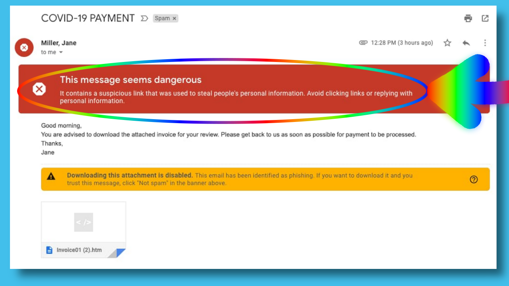
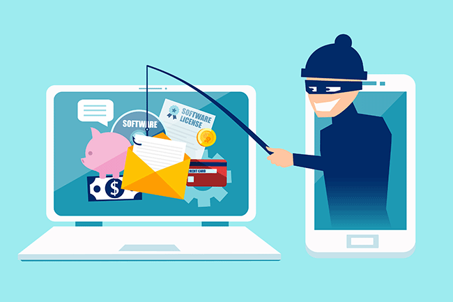

Phishing Scams
There's many types of phishing scams out there. The major ones being whaling, social media, vishing and many more. Scammers will normally would ask for you to provide or confirm your personal details. For example your First and Last Name, Birth-date and more. For example they might ask if your with a certain bank due to a "technical error that wiped out customer data". Alternatively, the scammer may alert you to "unauthorised or suspicious activity on your account" which is entirely incorrect. It mainly operates by sending an email saying that your bank has been compromised and that you need to call a specific phone number they would normally attach into an scam email.
These people who are trying to scam you are mainly based around India, mainly New Delhi which is one of the biggest areas for scammers to scam innocent people like us. These scammers don't just scam in India, they scam people all around the world including the United States, United Kingdom, Australia and many more countries.
A good example of this scam is Whaling where they ask you to click on a link to take you to a website such as Gumtree, Facebook, etc.
We need to be aware of the suspicous links that scammers may give us as they can contain dangerous files inside of them that may get accidentally installed onto your computer and could grab your personal information.
Another good example of this is Vishing where people get pressured into giving scammers their sensitive information
We need to make sure that we cannot get scammed by these people as we could end up in serious trouble if we are not careful with the information that we give out. The reason why I say this is because scammers can try getting money out of your bank of choice, not only that but they can also use your information such as your email to sign you up to more scams so you get scammed again.
One of the only ways you are able to stop yourself from being scammed is avoiding sketchy emails from people that you have never heard of before and make sure if its a legitmate email make sure it doesn't have a pop-up saying that the email may be dangerous

If you have unfortunately fallen victim to a scammer's deceitful tactics, it is crucial to take swift action in order to safeguard yourself against further monetary loss. Acting promptly, your first step should be to reach out to your bank and inform them about the scam, ensuring that they halt any suspicious transactions from taking place. Simultaneously, it is imperative to warn your trusted circle of family and friends about the scam, imparting crucial information to prevent them from becoming unsuspecting victims as well. By swiftly notifying both your financial institution and loved ones, you establish a robust defense against the scammer's malicious intentions, fortifying your personal and social networks against potential harm.
If the scammer has your personal information report the breach to your bank, superfund and any other financial services you personally use. Contact IDCARE (Australian and New Zealand identity and cyber support service), They can help you to limit the damage, Change all your passwords to stronger passwords, ones with symbols, numbers and letters. Watch out for suspicious contact (email, phone calls, text or messages through social media. Block or don't answer unknown calls. Do not click on any links you think look sketchy. Keep an eye on your bank account for unauthorised transfers.

In 2021-22, Card fraud went up from 6.9% in 2020-21 to 8.1%
In 2021-22, Scam exposure increased by 10 percent, 55% in 2020-21 to currently 65%
In 2021-22, Scam victimisation rates decreased from 3.6% in 2020-21 down to 2.7% currently
In summary in 2021-22 8.1% of people (1.7 million) experienced card fraud, 2.7% of people (552,000) experienced a scam, 0.8% of people (159,600) experienced identity theft and 2.5% of people (509,500) experienced online impersonation